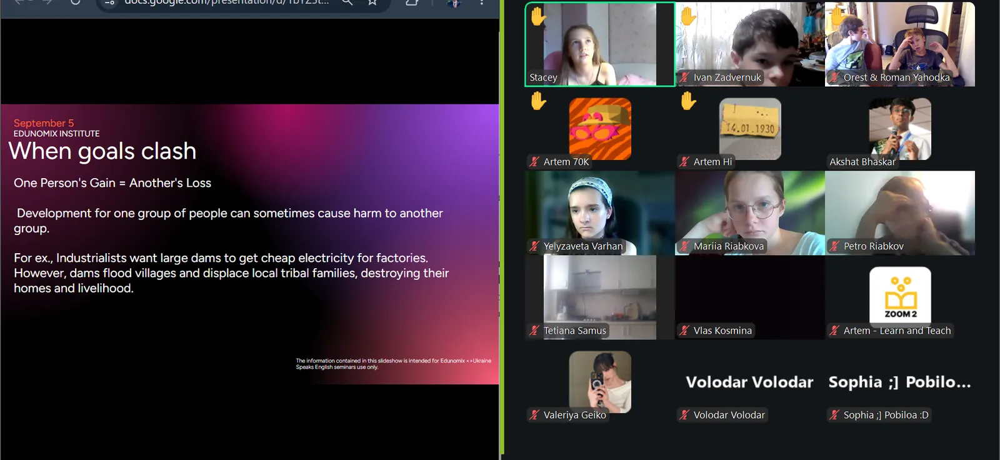

September 6th, 2026
Fall 2026 Ukraine Seminars
 t's been a huge few days for Decoded and Edunomix both.
t's been a huge few days for Decoded and Edunomix both.
Edunomix Institute partnered with Learn and Teach UA again this season through the Ukraine Speaks English initiative, giving students across Ukraine free financial education while so much of their normal schooling has been disrupted. More than 40 students of all ages showed up for the first class of the cycle. Every time this program runs, I'm reminded why we started it: students halfway across the world, logging on every week just to learn how money actually works.
The Decoded Podcast episode with Professor M. Ram Murty of Queen's University is finally live, and it took weeks of back and forth to make happen! We talked prime numbers, the Gita, Star Trek, and why he still guards three uninterrupted hours a day just to think, no phone, no distractions. This might be the best conversation we've recorded on the show. 44 minutes, link in the comments!
After dozens of interviews, we picked our new Head of the Decoded Newsletter, and I could not be more excited about what's coming next. More on who that is soon. A few newsletter roles are still open too, so if you want in, email me at akshat@thedecodedpodcast.com.
The Edunomix Institute India Essay Competition 2026 is officially open, deadline September 30! Applicants get judged by economics scholars from Harvard University, University of California, Berkeley, Cornell University, and University of Warwick, a panel most national competitions would kill for. We have already received a few dozen essays, and top entries walk straight onto the Edunomix India research team. Pick a prompt and start writing :)
One more thing! We at the Decoded Podcast have just finalized a partnership with HERizon, and I promise it's worth the wait. Details soon.
If any of this overlaps with what you're building, whether it's a podcast, a research team, or your own version of the essay competition, reach out. Always happy to talk!

Edunomix Institute Fall 2026 Ukraine Seminars, in partnership with Learn and Teach UA.